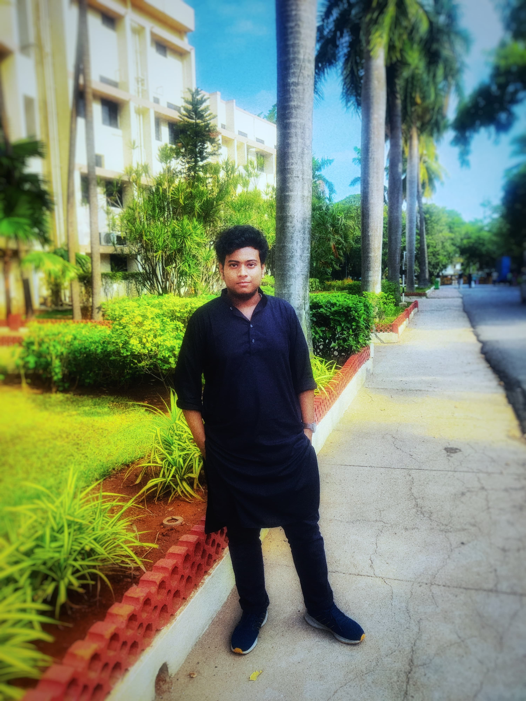

App designed for DSD
Faculty: Dr. Dhanabal R
Dr. Dhanabal R is a distinguished academic and researcher at VIT Vellore,
specializing in cutting-edge advancements in engineering and technology.
With a strong passion for innovation, he has contributed significantly to fields such as digital design and signal processing.
Dr. Dhanabal is widely recognized for his expertise, guiding students and professionals toward excellence in research and development.

By A S Rassel (23BML0051) & Ayush Jaiswal (23BEC0204)